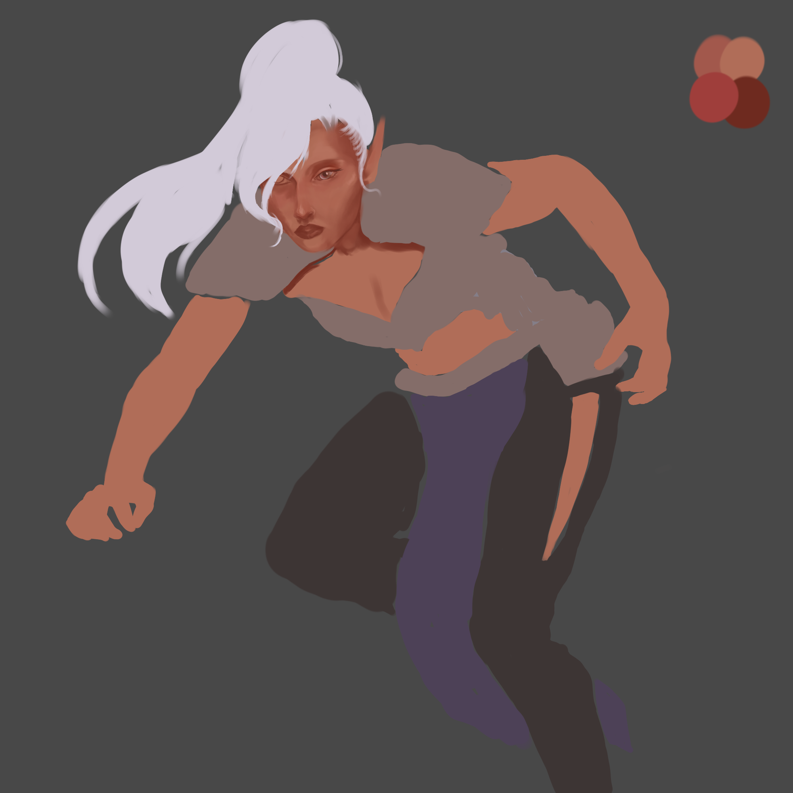

Blog
Work in progress artworks
Shadowheart from Baldurs gate WIP, Nov 3, 2023

This art piece is about 3 hours of work, very early work in progress. Baldurs Gate 3 is a game I've really enjoyed recently and decided to draw one of my favorite characters.